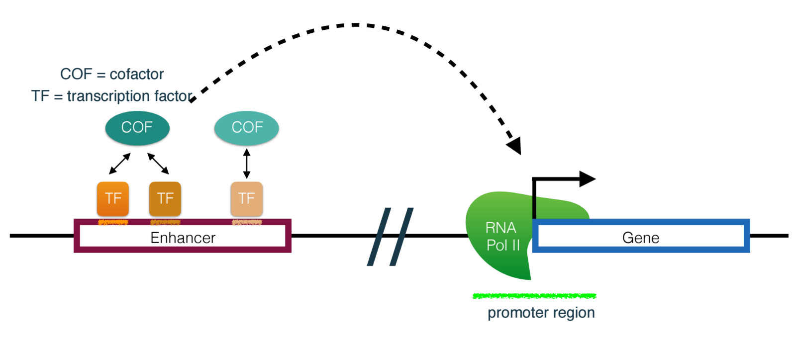

Mentor: Cory Simon
Summary
Different cell types in humans possess approximately the same genome despite having dramatically different functions. Gene regulation is the complex process by which cells selectively synthesize different proteins encoded in their genome. [1] A fundamental understanding of how genes are regulated can lead towards effective treatments for cancers and developmental disorders.
Enhancers are distal regulatory elements that, in conjunction with a promoter, recruit the proteins required to drive transcription of a gene. While the ~20,000 genes in the human genome are known, we have not identified all of the enhancers linked to each gene. The goal of this project is to leverage Altius’s data on the genome-wide regulatory landscape [2] to match candidate enhancers with promoters (and, thus, genes) and identify synergistic protein binding motifs that can reveal key players in enhancer-promoter gene expression. Convolutional neural networks (ConvNets) [3] are a natural machine learning algorithm to approach such questions, as they automatically discover relevant protein binding motifs in DNA sequences from training data.
Challenges include building an interpretable and explainable ConvNet to extract biological insights from our genome-wide regulatory landscape data sets; and mapping DNA sequences to a vector space.

[1] Alberts B, et al. Molecular Biology of the Cell, 4th ed. (2002)
[2] Thurman RE, Rynes E, Humbert R, Vierstra J, Maurano MT, Haugen E, Sheffield NC, Stergachis AB, Wang H, Vernot B, Garg K. The accessible chromatin landscape of the human genome. Nature. 2012 Sep 6;489(7414):75.
[3] LeCun Y, Bengio Y, Hinton G. Deep learning. Nature. 2015 May 28;521(7553):436-44.
[4] Zabidi MA, Stark A. Regulatory enhancer–core-promoter communication via transcription factors and cofactors. Trends in Genetics. 2016 Dec 31;32(12):801-14.
About Altius
The Altius Institute for Biomedical Sciences is an independent, not-for-profit research institute based in Seattle, Washington. Altius aims to unlock the potential of the living genome to open new frontiers for basic science, technology development, and translational medicine. Altius is developing transformative technologies to understand how a cell’s genome controls its function in health and disease, and to translate this understanding effectively into clinical settings in the discovery of new medicines.